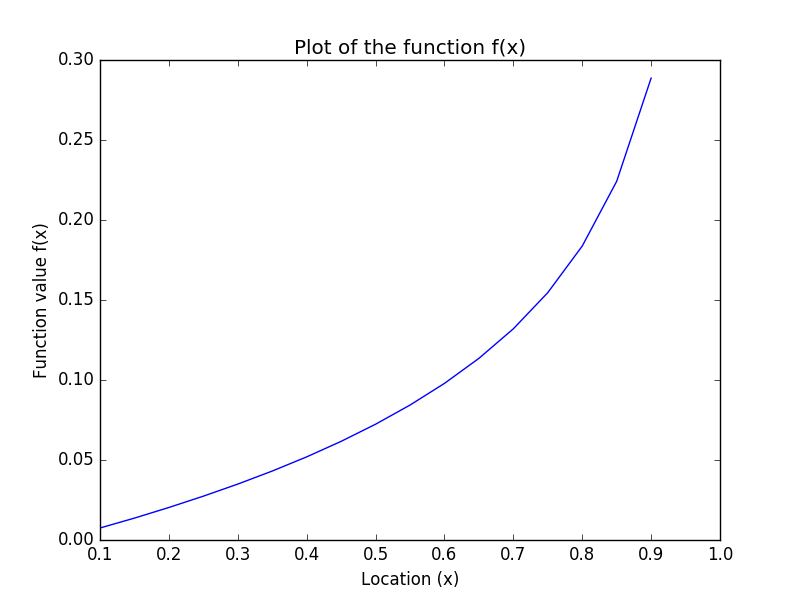
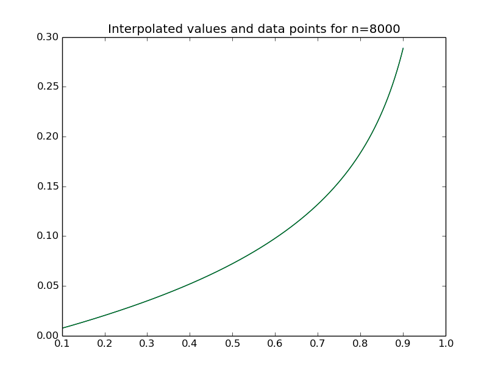
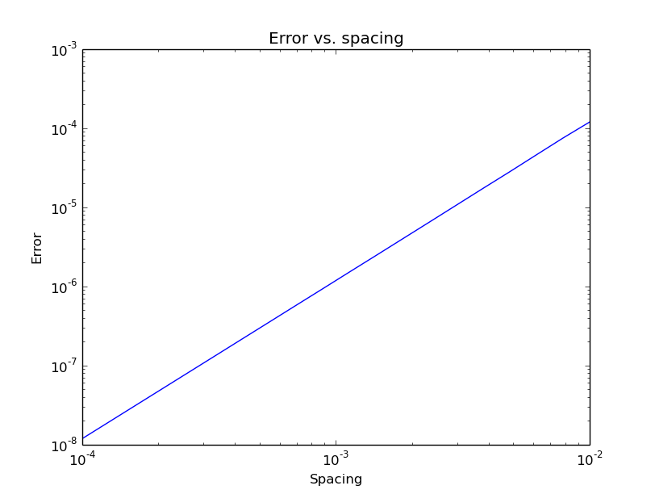
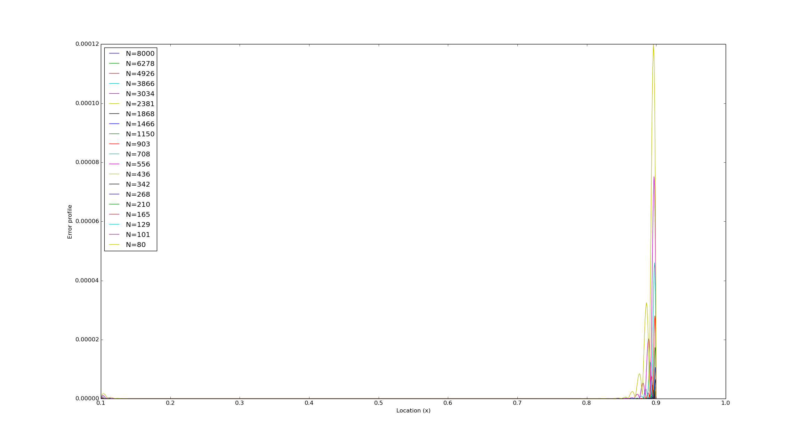
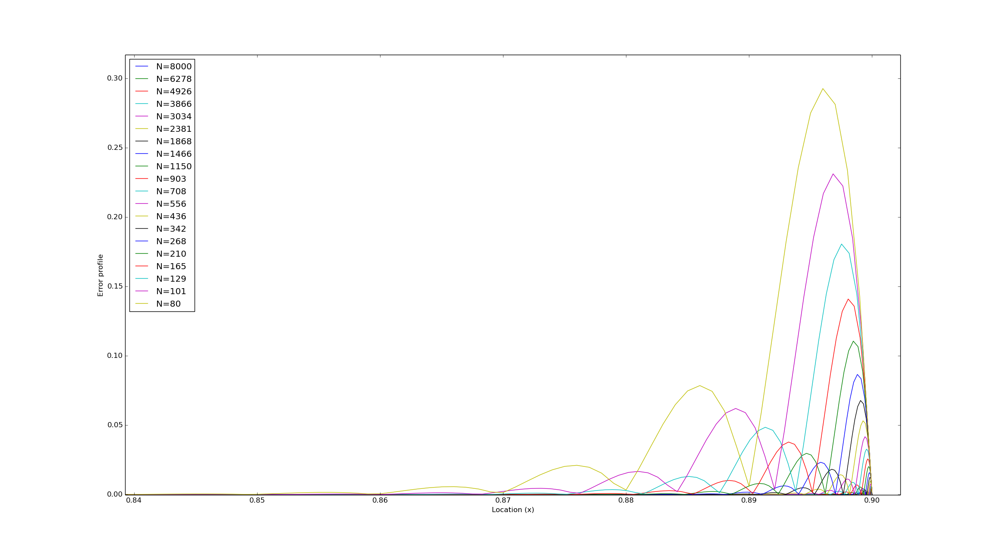

EE5011: Computer Methods in Electrical Engineering
Spline Interpolation (Week 2)
Rohan Rao, EE14B118
1 Programming Assignment
f(x) = (x1 + J0(x))/(√((1 − x)(1 + 100x2)))
1.1 Create a table of values
def f(x):
num=pow(x,1+special.jn(0,x))
densqr=(1+100*x*x)*(1-x)
den=sqrt(densqr)
return num/den
x=arange(0.1,0.95,0.05) #generates a set of points with spacing of 0.05 in the range of 0.1 and 0.9
y=f(x)
1.2 Plot the function
plot(x,y)
xlabel("Location (x)")
ylabel("Function value f(x)")
title("Plot of the function f(x)")

The function is analytic in the region [0.1,0.9] since its derivative exists and is continuous on this interval. The function has one singularity when defined on the real numbers ℝ: at x=1 and two additional singularities when defined on the complex numbers ℂ: at x=±0.1i. Thus, the radius of convergence of the function is 0.1 at both x=0.1 and x=0.9.
1.3 Vary N and spacing with boundary condition of y’’=0
The program has been modified as follows:
from scipy import *
from scipy import special
from matplotlib.pyplot import *
import weave
def func(x):
num=pow(x,1+special.jn(0,x))
densqr=(1+100*x*x)*(1-x)
den=sqrt(densqr)
return num/den
#define support code
with open("spline.c","r") as f:
scode=f.read()
h=logspace(-4,-2,20)
N=(0.8)/h
print N
err=zeros(h.shape)
figure(0)
for i in range(len(h)):
x=linspace(0.1,0.9,N[i])
y=func(x)
n=int(N[i])
xx=linspace(0.1,0.9,10*n+1)
y2=zeros(x.size)
#y2=cos(x)
u=zeros(x.size)
yy=zeros(xx.size)
code="""
#include <math.h>
int i;
double xp;
spline(x,y,n,1e40,1e40,y2,u);
for(i=0; i<=10*n; i++){
xp=xx[i];
splint(x,y,y2,n,xp,yy+i);
}
"""
weave.inline(code,["x","y","n","y2","u","xx","yy"],support_code=scode,extra_compile_args=["-g"],compiler="gcc")
if i==0:
figure(2)
plot(x,y)
plot(xx,yy)
title("Interpolated values and data points for n=%d" % N[i])
show()
figure(0)
z=abs(yy-func(xx))
plot(xx,z,label="N=%d"%N[i])
err[i]=z.max()
xlabel("Location (x)")
ylabel("Error profile")
legend(loc="upper left")
figure(1)
loglog(h,err)
xlabel("Spacing")
ylabel("Error")
title("Error vs. spacing")
show()
The output of the program is as follows:

The error varies linearly (log-log scale) with the spacing of points:

The error profile for various values of N is as follows:

From the above results we can conclude that the larger the number of points (and hence smaller the spacing between them) being evaluated, the smaller the error becomes. For obtaining an accuracy to the sixth decimal place, the error should be below 5x10 − 7 and from the graph above, we can see that we need a spacing of nearly 10 − 4, or N=8000.
1.4 Implement not-a-knot and then use splint
1.5 Analytic Evaluation of the function derivative
f(x) = (x1 + J0(x))/(√((1 − x)(1 + 100x2)))
f2(x) = √((1 − x)(1 + 100x2))
The two functions f1(x) and f2(x) can be differentiated separately and then the derivative of f(x) can be obtained using the quotient rule.
log(f1(x)) = log(x).(1 + J0(x))
(1)/(f1(x)).(df1(x))/(dx) = (1)/(x) + (J0(x))/(x) + (dJ0(x))/(dx).log(x)
From the properties of Bessel functions, (dJ0(x))/(dx) = − J1(x). Thus,
(df1(x))/(dx) = (x1 + J0(x)(1 + J0(x)))/(x) − J1(x).log(x).x1 + J0(x)
Similarly for f2(x):
(df2(x))/(dx) = ((200x − 300x2 − 1))/(2√((1 − x)(1 + 100x2)))
Since f(x) = (f1(x))/(f2(x)), using quotient rule,
(df(x))/(dx) = (f2.df1 − f1.df2)/((f2)2)
And so,
f’(x) = (x1 + J0(x)⎡⎣(1 + J0(x))/(x) − J1(x).log(x)⎤⎦)/(√((1 − x)(1 + 100x2))) − (x1 + J0(x)(200x − 300x2 − 1))/(2((1 − x)(1 + 100x2)1.5)
Evaluating this function derivative at the points x=0.1 and x=0.9:
f’(x)|x = 0.1 = 0.117288
f’(x)|x = 0.9 = 1.71855
Using this for the spline function call gives the following set of maximum error values for different spacings:
[ 4.04399847e-11 5.15273380e-11 6.56547594e-11 8.36139491e-11
1.06426368e-10 1.35298328e-10 1.71607228e-10 2.16412332e-10
2.69893607e-10 3.27979033e-10 3.79605181e-10 3.99744626e-10
7.31053273e-10 1.62706848e-09 3.82562831e-09 9.84342896e-09
2.76302701e-08 7.59388466e-08 2.03118858e-07 5.12266858e-07]
This is around 3 orders of magnitude smaller than the one that assumes a natural spline fit (y’’=0 at the boundaries):
[ 1.18177794e-08 1.91912783e-08 3.11743003e-08 5.06187381e-08
8.21990198e-08 1.33493015e-07 2.16932356e-07 3.52319880e-07
5.72755966e-07 9.29372786e-07 1.51269180e-06 2.45458206e-06
3.99519920e-06 6.50020535e-06 1.05992276e-05 1.72890126e-05
2.80538319e-05 4.59852693e-05 7.51624356e-05 1.19998543e-04]
1.6 100x the actual derivative for boundaries
Using 100x the function derivative at the points x=0.1 and x=0.9:
f’(x)|x = 0.1 = 11.7288
f’(x)|x = 0.9 = 171.855
Output (max errors):
[ 0.002888 0.00368029 0.00469061 0.00597706 0.00761671 0.00970658
0.01237379 0.01576938 0.0201066 0.02561299 0.03267817 0.04162913
0.05311506 0.06776002 0.08654521 0.11057097 0.14092375 0.18057983
0.23117527 0.29267474]
Clearly, the errors have increased by nearly an order of 8. This shows that the magnitude of the derivative at the boundaries plays an important role in obtaining the spline fit coefficients. The points near the edge have the maximum error, as can be seen from the plot below.

The function is of the form of a FIR filter with zeros at the points where the value is known, since the spline fit needs to pass through those points.